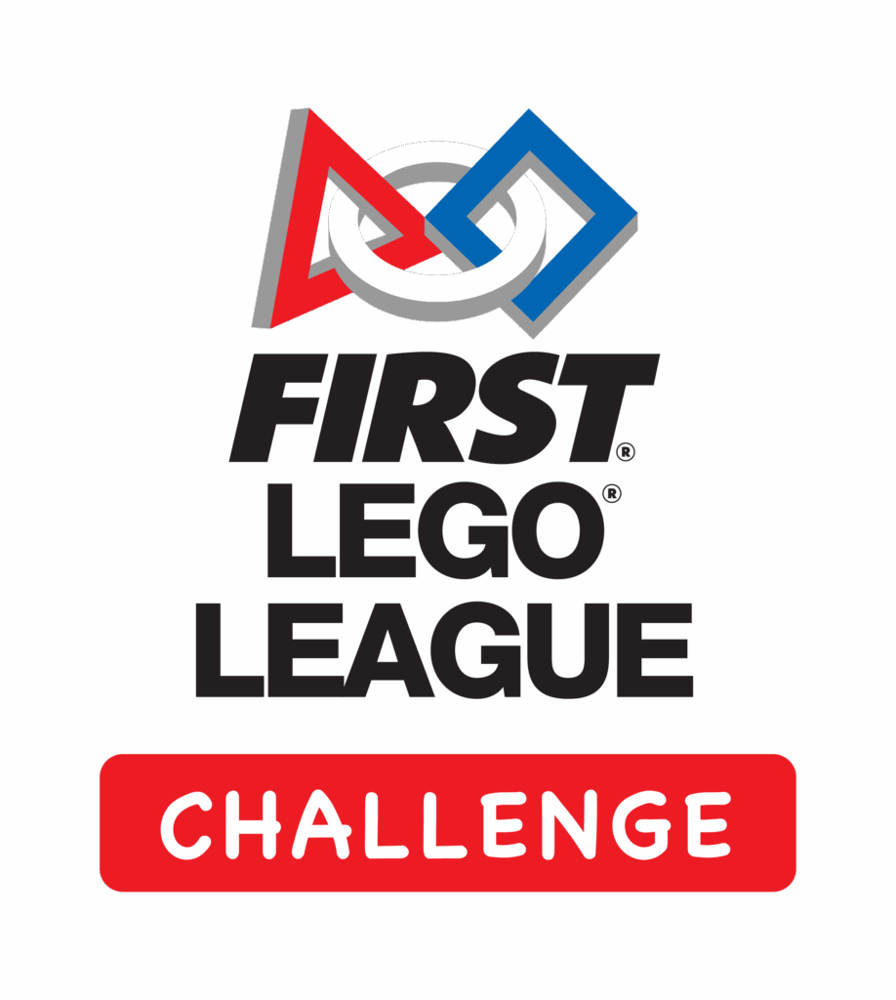

FIRST LEGO League (FLL) is a global robotics program for students ages 4-16 that uses LEGO technology to introduce them to STEM (science, technology, engineering, and math) in a fun and engaging way.

Different Divisions of FLL:
- Discover:
- A non-competitive introduction for younger students (ages 4-6) to STEM concepts using LEGO DUPLO bricks.
- Explore:
- A non-competitive program for grades 2-4, where teams focus on building and programming robots using LEGO Education SPIKE Prime.
- Challenge:
- A competitive division for grades 4-8 (or 9-16, depending on the region), where teams design, build, and program LEGO robots to complete missions on a field.